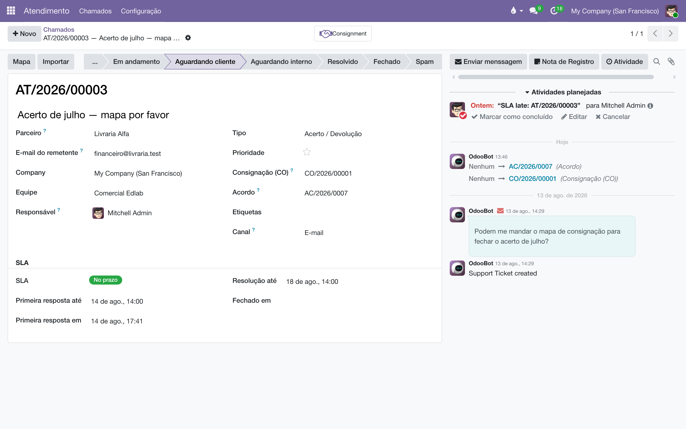
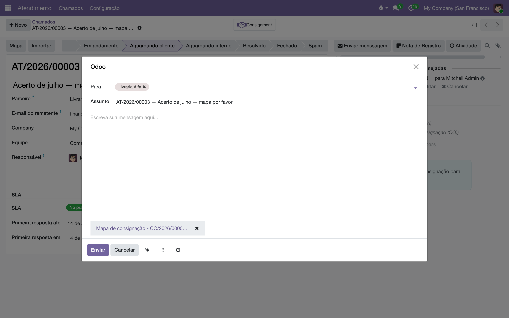
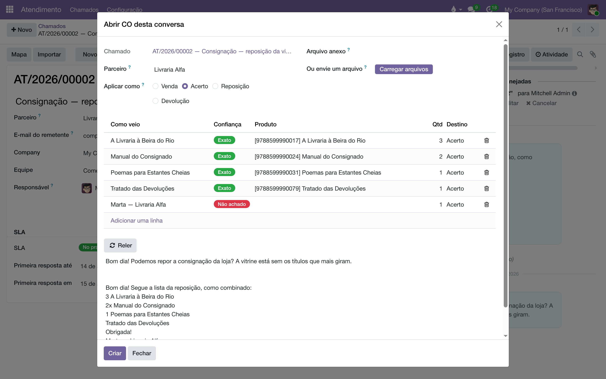

Atendimento e consignação
A ponte entre o chamado e a consignação: o vínculo com a CO e o acordo na ficha, o mapa do parceiro anexado à resposta com um botão, e o assistente que transforma a conversa — e-mail, colagem de Excel, planilha, PDF — num documento conferido.
Visão geral
O núcleo do Atendimento não sabe o que é consignação — de propósito: ele cuida de chamado, fila, SLA. Como quase todo o atendimento da casa é consignação, este módulo acrescenta ao chamado o que essa conversa pede:
| Peça | O que é |
|---|---|
| Vínculo com a CO e o acordo | Os campos Consignação (CO) e Acordo na ficha do chamado, com o botão Última CO para não caçar no dropdown. |
| Botão Mapa | Abre a resposta ao cliente já com o PDF do mapa de consignação anexado — o extrato do que a livraria tem na prateleira. |
| Botão Importar | O assistente que lê a conversa, propõe as linhas por título e ISBN, deixa conferir — e só então cria a CO (ou um pedido de venda) em rascunho. |
Sem este módulo instalado, o chamado continua funcionando — apenas com menos campos.
O chamado vinculado à consignação
Quando o Tipo do chamado é Consignação ou Acerto/Devolução (ou quando já há vínculo feito), a ficha mostra os campos Consignação (CO) e Acordo, filtrados pelo parceiro da conversa. O botão Última CO vincula num clique a consignação mais recente do parceiro. O vínculo aparece dos dois lados: o chamado ganha o botão Consignment que abre a CO, e a CO ganha um contador de chamados de atendimento que a citam.

Responder com o mapa
"Me manda o mapa" é o pedido mais comum da caixa. O botão Mapa, no topo do chamado, resolve em um gesto:
- Clique em Mapa. O sistema usa a CO vinculada ao chamado — ou, sem vínculo, a mais recente do parceiro.
- Abre a janela de resposta, endereçada ao parceiro, com o PDF Mapa de consignação já anexado.
- Escreva a mensagem e clique em Enviar. A resposta sai pelo próprio chamado, como qualquer outra.

Da conversa ao documento
O botão Importar abre a tela Abrir CO desta conversa. Ela já vem carregada com os e-mails do chamado, lidos e transformados em linhas propostas — uma por título, com a quantidade que a conversa disse. O leitor entende o jeito real de pedir livro: 3 Fim do SUS?, 2x Banguela, título sem número vale um, ISBN vale mais que o nome. Também entram no mesmo funil:
| Fonte | Como |
|---|---|
| Texto colado | O campo Texto bruto aceita colagem livre — inclusive direto do Excel, separada por tabulação. |
| Anexo do chamado | O campo Arquivo anexo oferece o último .xlsx, .csv ou PDF que veio na conversa. |
| Arquivo avulso | Ou envie um arquivo, para a planilha que chegou por outro canal. |
| Tabela-relatório no e-mail | Tabelas com ISBN (o relatório de estoque mínimo da Olist, por exemplo) viram linhas: achou ISBN e número, o número é a quantidade. |
PDF só serve se tiver camada de texto — o gerado por sistema. PDF escaneado é fotografia: sai vazio.
Cada linha proposta mostra Como veio (o que a conversa literalmente disse), a Confiança do casamento com o catálogo (Exato, Bom, Confira!, Não achado), o Produto, a Qtd e o Destino. A grade é editável: troque o produto de um "Confira!", apague a linha que era assinatura, ajuste a quantidade. O parser propõe, o humano confere — e só então o documento nasce, em rascunho.

O campo Aplicar como decide o que a conversa vira, para o lote inteiro — a linha individual continua editável para a exceção:
| Opção | O que cria |
|---|---|
| Venda | Um pedido de venda comum — nenhuma CO. Preço de capa da ficha do produto com a lista de preços do cliente: o preço escrito no e-mail é ignorado, e o acordo de consignação não é lido. |
| Acerto | Linhas de vendido na CO — o que a livraria reporta ter vendido. |
| Reposição | Linhas de reposição — reenviar para recompor a prateleira. |
| Devolução | Linhas de devolução — recolher da prateleira. |
O Criar gera o documento em rascunho, vincula ao chamado, registra no histórico — e o rascunho da tela se dá por cumprido. Nas opções de consignação, as linhas entram na CO em rascunho do chamado, ou numa CO nova quando não há.
Fechar a tela não perde nada: a conferência é um rascunho, um por chamado, e o botão Importar devolve tudo como estava. Já o Reler reconstrói as linhas do zero e descarta os ajustes manuais — ele avisa antes.
Perguntas frequentes
Os campos de CO não aparecem no chamado.
Eles só aparecem quando o Tipo do chamado é Consignação ou Acerto/Devolução — ou quando já há vínculo. Ajuste o tipo e os campos surgem.
A tela reclama que a conversa não tem cliente.
O e-mail chegou de um remetente que ninguém casou com um cadastro. Preencha o parceiro na própria tela de importação — ele grava no chamado também — e siga.
O telefone da assinatura virou quantidade?
Não: saudação, endereço e assinatura são reconhecidos como conversa, não como item. Se algo escapar, a linha aparece na grade — é exatamente para isso que a conferência existe: apague-a antes do Criar.
Escolhi Venda e o desconto veio da onde?
Da lista de preços do cliente, que nesta casa é onde mora a condição comercial de cada um. O pedido sai a preço de capa com o abatimento da lista na coluna de desconto — nada é digitado à mão.